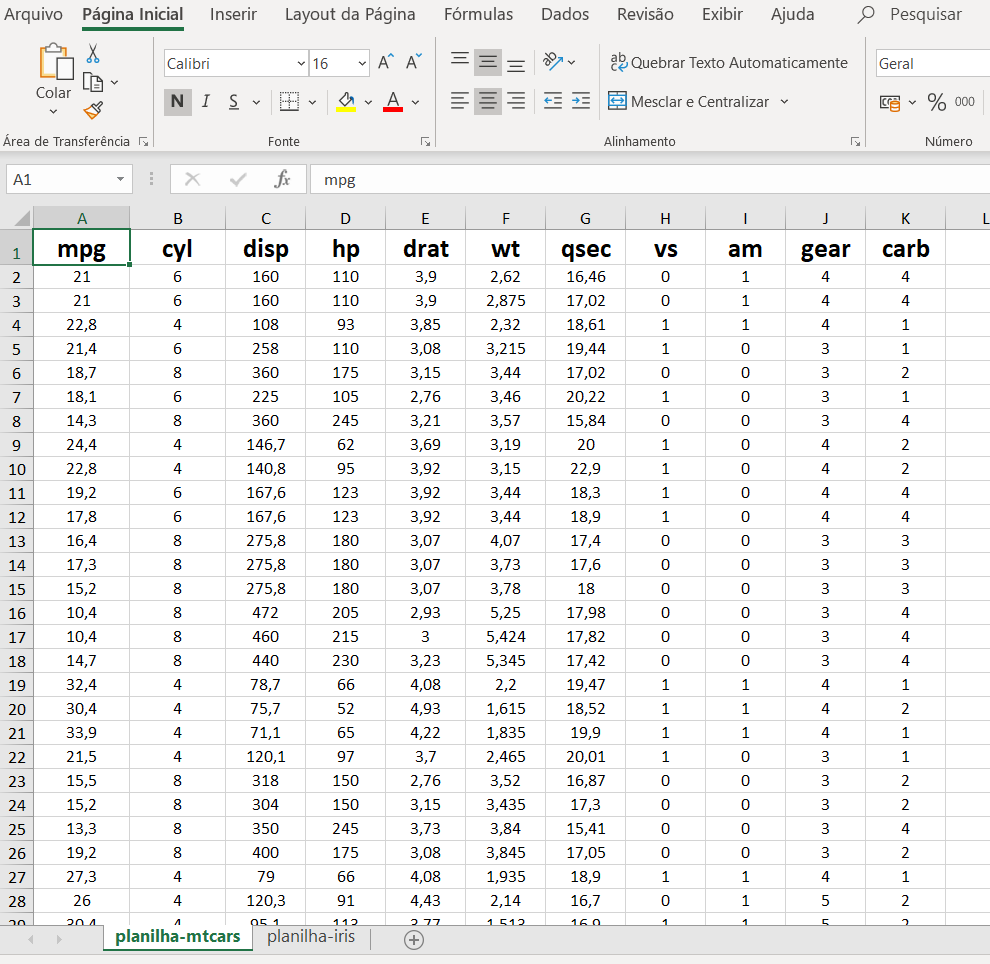
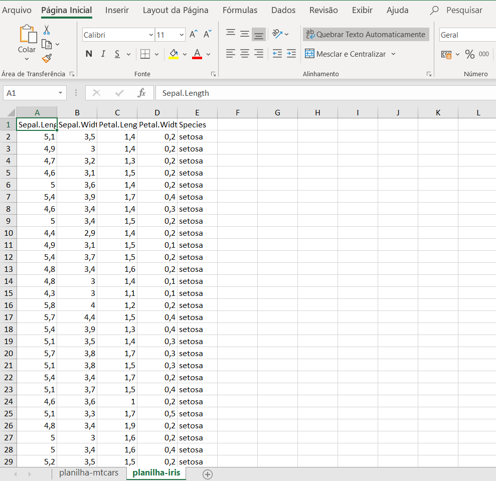

Neste post mostramos como criar arquivos Excel a partir do R.
Neste post exploramos como utilizar o R para escrever arquivos do Microsoft Excel (extensão .xlsx). Uma das grandes vantagens do R é documentar todas as operações que fazemos para gerar resultados e informações no Excel. Por exemplo, muitas vezes não lembramos quais tabelas e arquivos utilizamos para gerar nossas tabelas. Também pode ser que não lembremos se fizemos alguma alteração manual. Se precisarmos revisar o passo a passo do que fizemos pode ser que encontremos dificuldade em replicar o que foi feito. Se você usa R, não terá esse problema. Com o pacote openxlsx é possível ler e escrever arquivos com extensão “.xlsx”, enquanto que o script de R se encarrega de documentar o passo a passo das operações que você fez sobre os dados. Como escrever arquivos é um pouco mais complicado do que lê-los, mostramos, neste post, apenas como escrevê-los.
O modo mais simples de você escrever um arquivo “xlsx” utilizando o R se dá quando você tem uma única tabela de dados. Esse caso é bastante trivial e deixaremos para o final do post.
A outra forma de escrever arquivos “xlsx” é um pouco mais trabalhosa, mas nada muito complicado. A pergunta que naturalmente surge é por que usaríamos uma forma mais trabalhosa se existe uma forma menos trabalhosa?
Há vezes que queremos trabalhar com diversas planilhas em um mesmo arquivo Excel e é justamente para esse caso que existe uma forma mais trabalhosa. Além disso, há maior flexibilidade, pois podemos editar arquivos como se estivéssemos utilizando o próprio Excel (é possível escolher cores, escolher a fonte das células, etc). Se você tiver interesse de conhecer mais sobre as funcionalidades do pacote pode ler a documentação do openxlsx aqui.
Primeiro carregamos os seguintes pacotes:
library(dplyr)
library(openxlsx)Para este exemplo trabalharemos com a ideia de que queremos escrever duas planilhas em um único arquivo “xlsx”. Dessa forma, vamos trabalhar com duas tabelas disponíveis no pacote dplyr: “mtcars” e “iris”. A seguir alocamos cada uma das tabelas para os objetos df1 e df2.
data("mtcars")
data("iris")
df1 <- mtcars
df2 <- irisA criação de um arquivo “xlsx” no R passa por uma sequência de passos bem definidos. Primeiro devemos criar um objeto do tipo “workbook”. Isso pode ser feito da seguinte forma:
wb <- createWorkbook()Ao criar um objeto do tipo “workbook” iniciamos um projeto de arquivo “xlsx” no ambiente do R sem, de fato, haver criado esse arquivo em alguma pasta do nosso computador. Deve-se notar que o comando inicia um arquivo sem nenhuma planilha, ou seja, o arquivo não possui nem sequer uma planilha em branco como ocorre quando criamos um arquivo em branco no programa Excel.
Portanto, o segundo passo exige que criemos uma planilha antes de escrever os dados. Sempre que quisermos adicionar uma nova planilha no projeto de arquivo “xlsx”, devemos dizer ao R explicitamente para que o faça. A função addWorksheet cria apenas uma planilha. Se quisermos criar duas planilhas, precisamos utilizar essa função duas vezes.
No primeiro argumento da função addWorksheet deve-se indicar um objeto do tipo “workbook” (no nosso caso temos o objeto wb). No segundo argumento deve-se definir o nome da planilha. Abaixo criam-se duas planilhas no mesmo projeto de arquivo Excel.
addWorksheet(wb, sheetName = "planilha-mtcars")
addWorksheet(wb, sheetName = "planilha-iris")As planilhas recém criadas estão em branco. Para escrever os dados que queremos nas respectivas planilhas devemos utilizar a função writeData. Esta função possui 3 argumentos muito importantes. No primeiro argumento indica-se um objeto do tipo “workbook”; no argumento “sheet” seleciona-se o nome da planilha na qual desejamos escrever os dados (temos duas planilhas criadas: “planilha-mtcars” e “planilha-iris”); no argumento “x” selecionamos o objeto que contém os dados que queremos escrever. Como queremos escrever o objeto “df1” na “planilha-mtcars” e o objeto “df2” na “planilha-iris”, fazemos o seguinte:
writeData(wb, sheet = "planilha-mtcars", x = df1)
writeData(wb, sheet = "planilha-iris", x = df2)Com isso já temos duas planilhas com dados. De forma opcional, podemos editar características das planilhas. Por exemplo, alteremos a largura das colunas 1 e 2 da planilha com nome “planilha-mtcars” para o tamanho 16:
setColWidths(wb, sheet = "planilha-mtcars", cols = 1:2, widths = 16)Também é possível criar um estilo específico e aplicá-lo a células determinadas. Abaixo criamos dois estilos. O primeiro estilo modifica o tamanho da fonte para 16, destaca o texto em negrito e alinha o texto na vertical e na horizontal. Por sua vez, o segundo estilo modifica o tamanho da fonte para 10, torna a cor do texto vermelha e alinha o texto na vertical e na horizontal.
estilo1 <- createStyle(fontSize = 16,
textDecoration = "bold",
halign = 'center',
valign = 'center')
estilo2 <- createStyle(fontSize = 10,
fontColour = "red",
halign = 'center',
valign = 'center')Os estilos estão criados, mas ainda não selecionamos as células que adotarão os estilos criados. Para aplicar os estilos usamos a função addStyle. O primeiro estilo é aplicado em “planilha-mtcars” para a primeira linha e para as colunas de 1 a 11, isto é, o cabeçalho da tabela. O segundo estilo também é aplicado em “planilha-mtcars”, mas dessa vez somente ao corpo da tabela. É importante notar que quando estamos combinando várias linhas e colunas devemos usar o argumento gridExpand = TRUE. Caso contrário, o R acusará que houve erro. Lembre-se que este passo de configuração de estilos é opcional.
addStyle(wb,
sheet = "planilha-mtcars",
style = estilo1,
rows = 1,
cols = 1:11)
addStyle(wb,
sheet = "planilha-mtcars",
style = estilo2,
rows = 2:33,
cols = 1:11,
gridExpand = TRUE)Agora o que falta é salvar nosso objeto “wb” e escolher um nome para nosso arquivo. Isso é feito por meio da função saveWorkbook. Ao nomear o arquivo, devemos nos lembrar de colocar a extensão “.xlxs” depois do nome do arquivo, caso contrário o arquivo será ilegível no Excel. Assim, fazemos o seguinte para salvar nosso arquivo:
saveWorkbook(wb, file = "exemplo.xlsx")Depois de salvar nossa arquivo Excel, podemos ver como ficou cada uma das planilhas.

Como podemos perceber a planilha “mtcars” possui as duas primeiras colunas mais largas do que as demais colunas, conforme definido no código R anteriormente. Também notamos que ambos os estilos que criamos foram aplicados as células correspondentes.
Já a planilha “iris” aparece sem formatação específica, uma vez que não aplicamos nenhum estilo a esta planilha.

Como mencionado no início do post, existe um jeito mais fácil de escrever um arquivo Excel a partir do R. Basta utilizar a função write.xlsx. No primeiro argumento da função devemos especificar o objeto que contém os dados que desejamos escrever. No segundo argumento devemos escolher um nome para o nosso arquivo Excel acrescido da extensão “.xlsx”. Por exemplo, podemos fazer o seguinte para salvar o objeto df1:
write.xlsx(df1, file = "mtcars.xlsx")Da forma como foi salva, a planilha não apresentará nenhum tipo de formatação específica e salvará uma planilha parecida com a planilha “iris”, mas com os dados de “mtcars”.
Escrever arquivos Excel por meio do R pode aumentar nossa produtividade do dia a dia. Outras interações entre R e Excel também são possíveis. Em posts futuros escreveremos mais sobre o assunto.